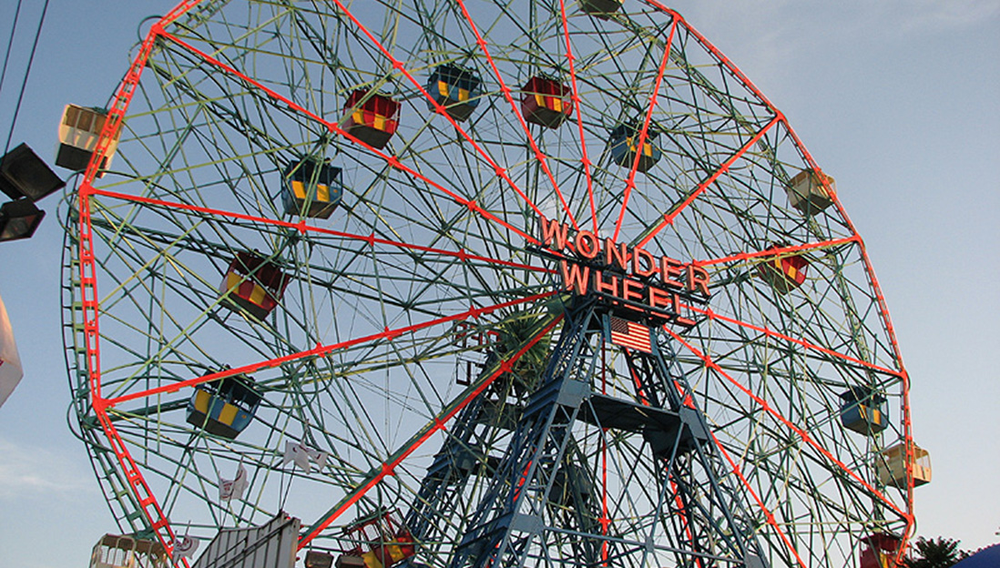
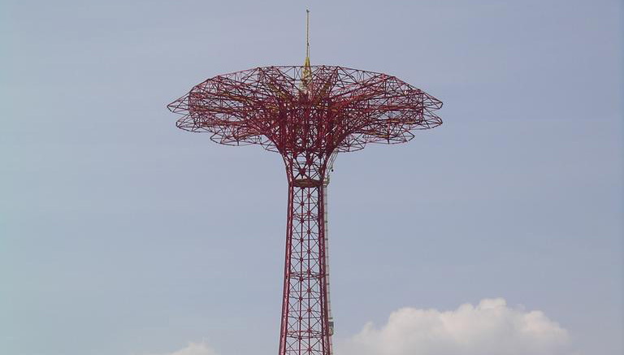

Coney Island Rides
Cyclone
The Cyclone is a historic wooden roller coaster, that opened on June 26, 1927 in the Coney Island section of Brooklyn, New York City.

Wonder Wheel
A 150 ft tall eccentric Ferris wheel located at Deno's Wonder Wheel Amusement Park at Coney Island.

Parachute Jump
A now defunct amusement ride whose iconic open-frame steel structure remains a Brooklyn landmark. 250 feet tall and weighing 170 tons, it has been called the "Eiffel Tower of Brooklyn".
